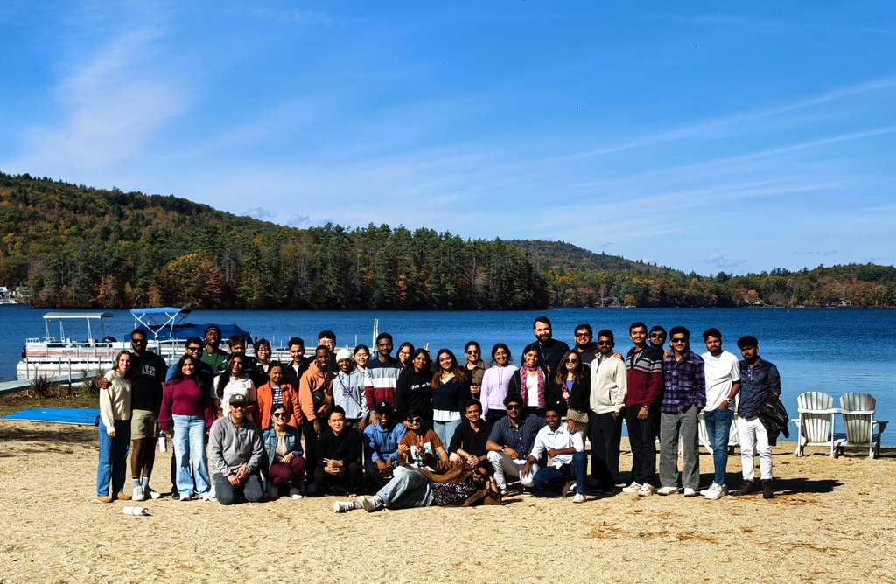

My Journey & Mission
"The Lord has been my strength and guide through every trial, shaping my journey with His love and purpose. My life’s mission is to help others experience the same hope and transformation in Christ.”
I was born and raised in a Christian family in India, surrounded by a legacy of faith, but my personal relationship with Jesus deepened through trials. From overcoming fear with Scripture to trusting Him through a severe accident, I’ve seen God’s faithfulness at every turn.
Today, I serve as a Ministry Representative with ISI. Having faced the challenges of navigating a new country myself, I am passionate about helping international students at the University of Bridgeport find their identity and purpose in Christ.
Support the Mission
Would you consider partnering with me to reach the nations on our campus?
$50 / mo
$75 / mo
$100 / mo
February 12, 2026
When God Sends Snow, We Go Sledding! ❄️

A few weeks ago, a massive snowstorm shut everything down. We grabbed sleds and turned it into a sledding day! For students from Vietnam, India, and Nepal, it was their first time seeing snow. We shared hot chocolate and laughter, reminding us that ministry is about becoming family.
February 9, 2026
Welcoming New Faces

The new semester is underway! We've hit the ground running with Orientation and Welcome Dinners. We are choosing gratitude for every student God brings our way, specifically connecting with many new faces from Vietnam and China.